绝密★启用前
注意事项：
1．答卷前，考生务必将自己的姓名、准考证号填写在答题卡上。
2．回答选择题时，选出每小题答案后，用铅笔把答题卡上对应题目的答案标号涂黑，如需改动，用橡皮擦干净后，再选涂其它答案标号。回答非选择题时，将答案写在答题卡上，写在本试卷上无效。
3．考试结束后，将本试卷和答题卡一并交回。
可能用到的相对原子质量：H 1 Li 7 C 12 N 14 O 16 Na 23 S 32 Cl 35.5 Ar 40 Fe 56 I 127
相关题目：第 7 题 · 第 8 题 · 第 9 题 · 第 10 题 · 第 11 题 · 第 12 题 · 第 13 题 · 第 26 题 · 第 27 题 · 第 28 题 · 第 35 题 · 第 36 题
一、选择题：本题共13小题，每小题6分，共78分。在每小题给出的四个选项中，只有一项是符合题目要求的。
本册收录其中的化学第7—13题。第8题当年采用单选A或单选B均给分的特殊评分安排。
相关题目：第 7 题 · 第 8 题 · 第 9 题 · 第 10 题 · 第 11 题 · 第 12 题 · 第 13 题
返回原卷说明与相对原子质量 返回选择题说明
题目与已知条件
磷酸亚铁锂（LiFePO4）电池是新能源汽车的动力电池之一。采用湿法冶金工艺回收废旧磷酸亚铁锂电池正极片中的金属，其流程如下：
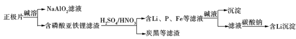
下列叙述错误的是
A. 合理处理废旧电池有利于保护环境和资源再利用
B. 从“正极片”中可回收的金属元素有Al、Fe、Li
C. “沉淀”反应的金属离子为Fe3+
D. 上述流程中可用硫酸钠代替碳酸钠
查看原题图／原始配图
原始配图 1
所用高中知识
离子在水溶液中的沉淀、铝与碱的反应、铁的变价。
读题与思路
碱溶先除铝，硝酸把Fe²⁺氧化为Fe³⁺后加碱沉淀。末段依赖Li₂CO₃难溶，Li₂SO₄并不能替代它沉锂；A资源回收、B铝铁锂来源、C沉淀铁价态均成立，D不成立。
分步解析
- 正极片中的铝与碱反应进入铝酸盐溶液；磷酸亚铁锂中的铁、锂留在后续处理链。回收金属既减少废弃物污染风险，又节约矿产资源，A、B成立。
- 酸溶过程加入硝酸，Fe(Ⅱ)被氧化为Fe(Ⅲ)。因此随后调pH形成的铁沉淀为Fe(OH)3，对应Fe3+，C成立。
- 末端需要2Li++CO32−→Li2CO3↓。硫酸锂可溶，SO42−不能替代CO32−完成这一步沉锂。
检查与易错点
判断试剂能否替换必须保留流程的分离目的；不能只因两种试剂都是钠盐就认为可通用。
正极材料是磷酸亚铁锂LiFePO₄，不要误写成硫酸亚铁锂。
本题来源：paper2018 · doc-paper
返回原卷说明与相对原子质量 返回选择题说明
题目与已知条件
下列说法错误的是
A. 蔗糖、果糖和麦芽糖均为双糖
B. 酶是一类具有高选择催化性能的蛋白质
C. 植物油含不饱和脂肪酸酯，能使Br₂/CCl4褪色
D. 淀粉和纤维素水解的最终产物均为葡萄糖
查看原题图／原始配图
所用高中知识
单糖与双糖的分类；生物催化剂；油脂加成与多糖水解。
读题与思路
果糖是单糖，不能把蔗糖、果糖、麦芽糖全部归为双糖，A明确错误。酶若指全部生物催化物，少数RNA核酶使“都是蛋白质”的理解不成立；植物油不饱和键可加成溴，淀粉/纤维素最终水解为葡萄糖。另查当年考试部门公告转载，单选A或单选B都给分。
分步解析
- 果糖不能进一步水解为更简单的糖，属于单糖；蔗糖、麦芽糖属于双糖。A将果糖归为双糖，错误。
- 多数酶的本质是蛋白质，但某些具有催化活性的RNA也属于酶，即核酶。因此若B被理解为“所有酶都是蛋白质”，范围过强。题面原词为“高选择催化性能”；论证不应把核酶例外删去。
- 植物油通常含不饱和脂肪酸甘油酯，其C=C与Br2加成，使溴的四氯化碳溶液褪色。淀粉、纤维素充分水解最终都得到葡萄糖，C、D成立。
- 当年各使用省份陆续公告：本题单选A或单选B均给6分。这里是两种单选作答分别被接受，并非将题型改成多选。
答案
A（当年评分说明：单选A或单选B均得6分）。果糖是单糖，A明确错误；B若理解为“酶都是蛋白质”，有核酶反例。
检查与易错点
不能把答案写成“AB”并声称两项同时涂选得满分。新东方早期参考仅列A，后来评分公告补充了B的接受方式。
本题来源：paper2018 · scoring2018 · doc-paper
返回原卷说明与相对原子质量 返回选择题说明
题目与已知条件
在生成和纯化乙酸乙酯的实验过程中，下列操作未涉及的是
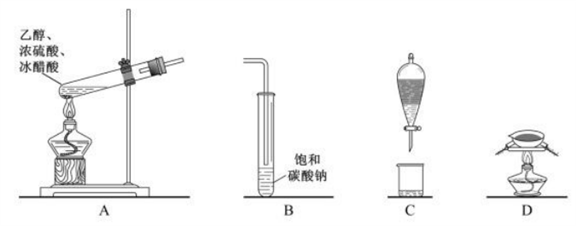
A. A B. B C. C D. D
查看原题图／原始配图
所用高中知识
酯化、挥发性物质的吸收、互不相溶液体的分液。
读题与思路
A加热酯化，B用饱和碳酸钠溶液接收并除杂，C分液，均属流程。D图为坩埚配泥三角的灼烧装置，不用于制取、纯化易挥发的乙酸乙酯，故选D。
分步解析
- 乙酸和乙醇在浓硫酸作用下加热生成乙酸乙酯和水，图A对应反应装置。
- 接收管内的饱和Na2CO3溶液中和挥发的乙酸、溶解乙醇，并降低乙酸乙酯的溶解度；导气管末端不能浸入液面，防止倒吸，图B涉及。
- 乙酸乙酯与盐溶液分层，采用分液漏斗分离，图C涉及。
- 图D中坩埚放在泥三角上直接加热，是灼烧固体的装置；所制乙酸乙酯为易挥发的液体，不采用灼烧操作，所以D未涉及。
检查与易错点
D图应辨认为坩埚、泥三角组成的灼烧装置，不能与蒸发皿混淆。饱和碳酸钠吸收杂质后，还需利用酯与水相不互溶进行分液。
本题来源：paper2018 · doc-paper
返回原卷说明与相对原子质量 返回选择题说明
题目与已知条件
NA是阿伏加德罗常数的值，下列说法正确的是
A. 16.25 g
FeCl3水解形成的Fe(OH)3胶体粒子数为0.1
NA
B. 22.4 L（标准状况）氩气含有的质子数为18NA
C. 92.0 g甘油（丙三醇）中含有羟基数为1.0NA
D. 1.0 mol
CH4与Cl2在光照下反应生成的CH3Cl分子数为1.0NA
查看原题图／原始配图
所用高中知识
n=m/M、标准状况下气体摩尔体积、胶粒聚集、官能团计数及取代反应。
读题与思路
氩为单原子气体，标准状况22.4 L为1 mol，每原子18质子，所以B为18NA。FeCl₃不完全水解且胶粒含多个Fe(OH)₃单元；92 g甘油1 mol含3 mol羟基；甲烷光氯化为多步混合取代，均不能按另外三项等式计数。
分步解析
- 16.25/162.5=0.100 mol FeCl3。即使按铁原子计数，也不能等同胶粒数：水解非完全，且一个胶粒聚集了许多Fe(OH)3结构单元，所以A不成立。
- 标准状况下22.4 L Ar为1 mol；Ar是单原子气体，一个Ar原子有18个质子，故质子数为18NA，B成立。
- 甘油摩尔质量为92.0 g·mol−1，92.0 g为1 mol；每分子含3个羟基，故羟基数为3NA。
- 甲烷光照氯代是连续取代过程，得到CH3Cl、CH2Cl2等混合物；不能由1 mol甲烷推出1 mol CH3Cl。
检查与易错点
“结构单元数”“分子数”“胶粒数”不能互换；气体体积需同时满足题给温度、压强。
本题来源：paper2018 · doc-paper
返回原卷说明与相对原子质量 返回选择题说明
题目与已知条件
环之间共用一个碳原子的化合物称为螺环化合物，螺[2，2]戊烷（ ）是最简单的一种。下列关于该化合物的说法错误的是
）是最简单的一种。下列关于该化合物的说法错误的是
A. 与环戊烯互为同分异构体
B. 二氯代物超过两种
C. 所有碳原子均处同一平面
D. 生成1 molC5H12至少需要2 molH2
查看原题图／原始配图
所用高中知识
同分异构、四面体碳、等效位置与氢化的原子守恒。
读题与思路
螺[2.2]戊烷为C₅H₈，与环戊烯同式；中心碳四个C—C方向呈四面体，两个三元环不能同面，因此C错误。二氯取代至少可同一碳、同一环不同碳、不同环，超过两种；饱和开环成C₅H₁₂需净增4H即2H₂。
分步解析
- 中心碳无氢，外围4个碳均为CH2，分子式为C5H8；环戊烯也是C5H8，连接方式不同，A成立。
- 二氯代至少有：两Cl在同一CH2上；在同一三元环的两个CH2上；分处两个三元环。三类连接方式已足以证明超过两种，不必用未约定的立体异构计数。
- 中心碳以四个单键连接四个碳，局部构型为四面体式；这四个碳不能同时与中心碳在一个平面内，故C错误。
- C5H8+2H2→C5H12，氢原子由8增为12，至少需要2 mol H2/mol原物质，D成立。
检查与易错点
这里的共面判断有明确的“四个直接相连碳”依据，不能泛化为含任一sp³碳的分子就绝不可能所有碳共面。
本题来源：paper2018 · doc-paper
返回原卷说明与相对原子质量 返回选择题说明
题目与已知条件
主族元素W、X、Y、Z的原子序数依次增加，且均不大于20。W、X、Z最外层电子数之和为10；W与Y同族；W与Z形成的化合物可与浓硫酸反应，其生成物可腐蚀玻璃。下列说法正确的是
A. 常温常压下X的单质为气态
B. Z的氢化物为离子化合物
C. Y和Z形成的化合物的水溶液呈碱性
D. W与Y具有相同的最高化合价
查看原题图／原始配图
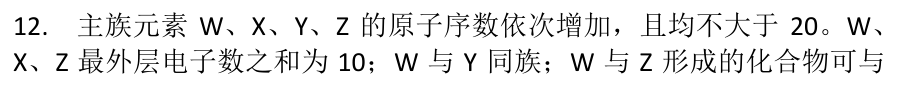
原始配图 1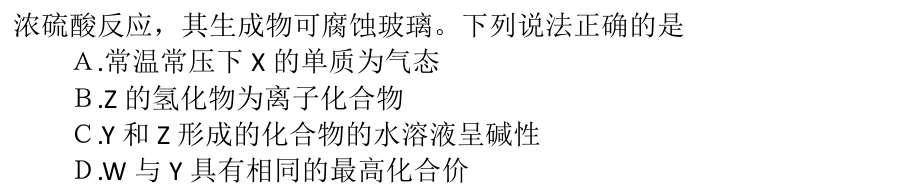
原始配图 2所用高中知识
HF腐蚀玻璃；主族价电子数；离子型氢化物；卤素最高价。
读题与思路
腐蚀玻璃的产物为HF，结合序数限制得W=F、Y=Cl，Z只能K或Ca。若Z=K，最外层和给X=Mg；若Z=Ca则X=Na，两组都满足题意。两组Z的氢化物（KH或CaH₂）都为离子化合物，B成立；X不是气态，氯化物不呈碱性，F没有与Cl相同的最高正价。
分步解析
- 能由氟化物与浓硫酸生成并腐蚀玻璃的气体是HF。结合原子序数顺序与同族关系，W为F，Y为Cl。
- W有7个价电子，故X、Z价电子数之和为3。Z的原子序数大于Cl且不超过20，可能为K或Ca。若Z=K，则X=Mg；若Z=Ca，则X=Na。两组都满足题干。
- 两组X（Mg或Na）的单质常温均为固体，A错误；两组Z的氢化物KH或CaH2都由金属阳离子和H−构成，B正确。
- Y、Z形成KCl或CaCl2，高中近似下水溶液不呈碱性，C错误。F无正化合价，而Cl最高正价为+7，D错误。
答案
B。可行元素组为F、Mg、Cl、K，或F、Na、Cl、Ca。
检查与易错点
旧参考只列Mg/K，漏掉Na/Ca。正确选项不因此改变，但元素推断必须保留全部符合条件的解。
本题来源：paper2018 · doc-paper
返回原卷说明与相对原子质量 返回选择题说明
题目与已知条件
最近我国科学家设计了一种CO2+H2S协同转化装置，实现对天然气中CO2和H2S的高效去除。示意图如图所示，其中电极分别为ZnO@石墨烯（石墨烯包裹的ZnO）和石墨烯，石墨烯电极区发生反应为：
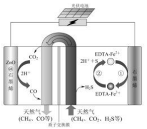
①EDTA-Fe2+-e-＝EDTA-Fe3+
②2EDTA-Fe3++H2S＝2H++S+2EDTA-Fe2+
该装置工作时，下列叙述错误的是
A.
阴极的电极反应：CO2+2H++2e-＝CO+H2O
B.
协同转化总反应：CO2+H2S＝CO+H2O+S
C. 石墨烯上的电势比ZnO@石墨烯上的低
D.
若采用Fe3+/Fe2+取代EDTA-Fe3+/EDTA-Fe2+，溶液需为酸性
查看原题图／原始配图
所用高中知识
电解池的阴、阳极；氧化还原介体；总反应叠加；盐类水解。
读题与思路
石墨烯上Fe²⁺失电子，故是阳极且电势比左侧阴极高。把两次Fe配合物步骤相加得到H₂S→S+2H⁺+2e，再和阴极CO₂+2H⁺+2e→CO+H₂O相加得到总式。普通Fe³⁺酸性可抑制水解，D合理。只有C把电势高低颠倒。
分步解析
- 石墨烯上发生EDTA-Fe2+−e−→EDTA-Fe3+，属于氧化，因此石墨烯是阳极，ZnO@石墨烯是阴极。
- 阴极中C由+4价降为+2价，需2e−：CO2+2H++2e−→CO+H2O。
- 将介体电极反应乘2，再加题给H2S与三价铁配合物反应，消去两种介体，得H2S→S+2H++2e−。与阴极相加：CO2+H2S→CO+H2O+S。
- 该装置由外加电源驱动，阳极电势高于阴极，C将大小关系颠倒。游离Fe3+/Fe2+容易水解，酸性介质有利于抑制水解，D成立。
检查与易错点
总反应左右C、H、O、S守恒；两半反应的电子和H⁺均恰好消去。不要套用“原电池负极为阳极”而忽略本题是电解池。
本题来源：paper2018 · eol2018 · doc-paper
三、非选择题：共174分。第22—32题为必考题，每个试题考生都必须作答。第33—38题为选考题，考生根据要求作答。
本册化学必考题为第26—28题，共43分。
相关题目：第 26 题 · 第 27 题 · 第 28 题 · 第 35 题 · 第 36 题
返回原卷说明与相对原子质量 返回非选择题说明
题目与已知条件
（14分）
醋酸亚铬[(CH3COO)2Cr·2H2O］为砖红色晶体，难溶于冷水，易溶于酸，在气体分析中用作氧气吸收剂。一般制备方法是先在封闭体系中利用金属锌作还原剂，将三价铬还原为二价铬；二价铬再与醋酸钠溶液作用即可制得醋酸亚铬。实验装置如图所示，回答下列问题：
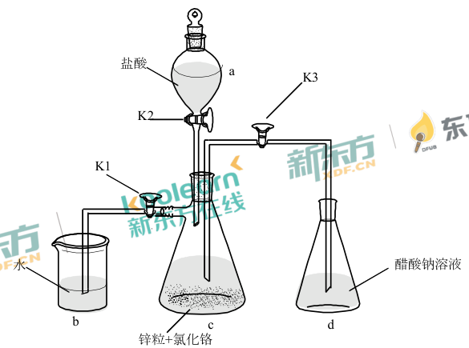
（1）实验中所用蒸馏水均需经煮沸后迅速冷却，目的是_________，仪器a的名称是_______。
（2）将过量锌粒和氯化铬固体置于c中，加入少量蒸馏水，按图连接好装置，打开K1、K2，关闭K3。
①c中溶液由绿色逐渐变为亮蓝色，该反应的离子方程式为_________。
②同时c中有气体产生，该气体的作用是_____________。
（3）打开K3，关闭K1和K2。c中亮蓝色溶液流入d，其原因是________；d中析出砖红色沉淀，为使沉淀充分析出并分离，需采用的操作是___________、_________、洗涤、干燥。
（4）指出装置d可能存在的缺点______________。
题面版本说明：本题图按公开排印版记作（CH₃COO）₂Cr·2H₂O；所附DOC及另一排印版记作（CH₃COO）₂Cr·H₂O。两版本的四问与实验装置一致，结晶水数不参与本题计算，以下按共同题设讨论Cr(Ⅱ)的制备和防氧化。
查看原题图／原始配图
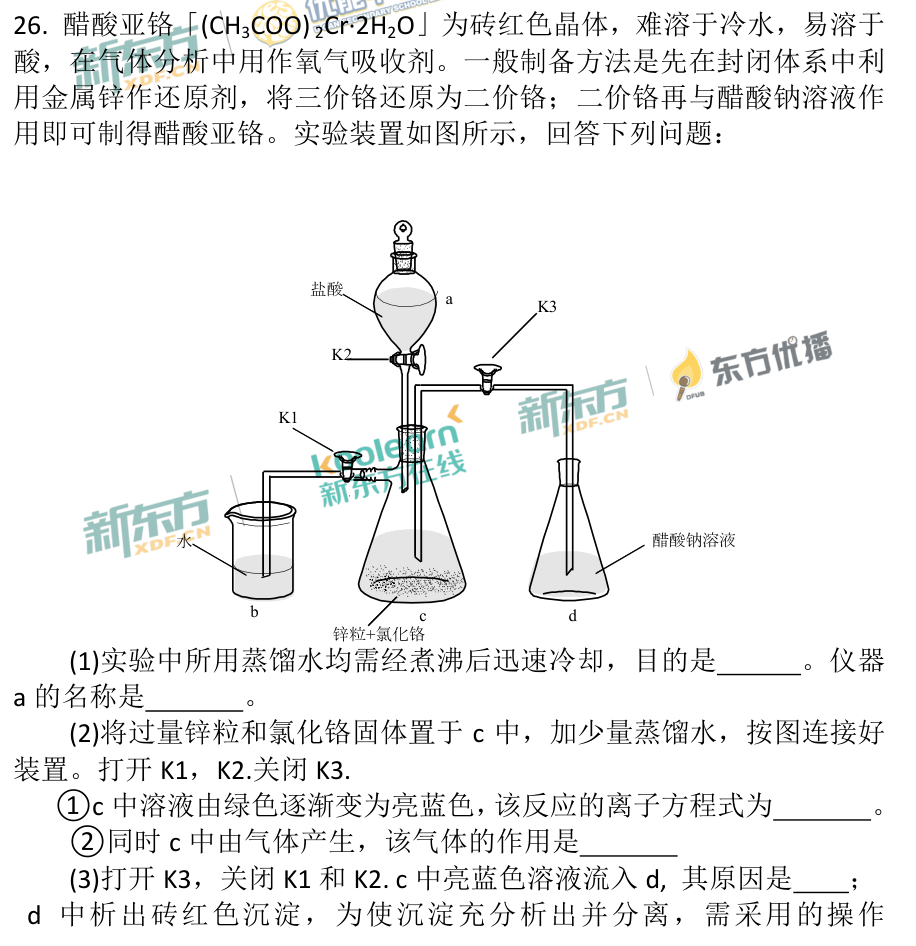
原始配图 1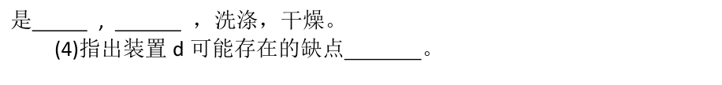
原始配图 2所用高中知识
低价金属离子的还原性、除氧、气压转移液体、冷却结晶。
读题与思路
产品可吸氧说明Cr²⁺易氧化，故用煮沸后迅冷的去氧水。Zn每原子失2e对应2Cr³⁺→2Cr²⁺；同时产H₂排空气。关K₁/K₂开K₃后继续放氢形成压差，将c溶液压入d。冷水中溶解度低所以冰浴冷却后过滤；d敞口是氧化风险。
分步解析
- （1）煮沸蒸馏水赶出溶解O2；迅速冷却可减少重新溶氧，避免Cr(Ⅱ)被氧化。仪器a为分液漏斗。
- （2）①锌每原子失2e−，两个Cr3+各得1e−：Zn+2Cr3+→Zn2++2Cr2+。②过量锌同时与盐酸反应：Zn+2H+→Zn2++H2↑；生成H2排出c中空气并形成保护气氛。
- （3）关闭排气通路后，锌与酸继续放出H2，c内气压升高，压强差把溶液沿导管压入d。产物难溶于冷水，因此冷却结晶、过滤，再洗涤、干燥。
- （4）d与外界空气相通，O2可进入或溶解到溶液中，使Cr(Ⅱ)氧化、产品变质。改进应围绕惰性气体或H2保护与隔绝空气，而非仅提高锌量。
答案
（1）除去溶解氧；分液漏斗。（2）Zn+2Cr³⁺→Zn²⁺+2Cr²⁺；排空气、作保护气。（3）生成H₂使c压强增大；冷却结晶、过滤。（4）d易接触空气，导致产物氧化。
检查与易错点
离子式电荷：左+6，右+2+4=+6；电子转移2。不得把H₂解释为将Cr³⁺还原的主要还原剂，题设还原剂是锌。
本题来源：paper2018 · eol2018 · doc-paper
返回原卷说明与相对原子质量 返回非选择题说明
题目与已知条件
（14分）
焦亚硫酸钠（Na2S2O5）在医药、橡胶、印染、食品等方面应用广泛。回答下列问题：
（1）生产Na2S2O5，通常是由NaHSO3过饱和溶液经结晶脱水制得。写出该过程的化学方程式__________。
（2）利用烟道气中的SO2生产Na2S2O5的工艺为：
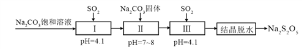
①pH=4.1时，Ⅰ中为__________溶液（写化学式）。
②工艺中加入Na2CO3固体、并再次充入SO2的目的是__________。
（3）制备Na2S2O5也可采用三室膜电解技术，装置如图所示，其中SO2碱吸收液中含有NaHSO3和Na2SO3。阳极的电极反应式为_____________。电解后，__________室的NaHSO3浓度增加。将该室溶液进行结晶脱水，可得到Na2S2O5。
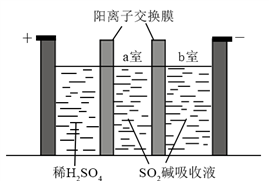
（4）Na2S2O5可用作食品的抗氧化剂。在测定某葡萄酒中Na2S2O5残留量时，取50.00
mL葡萄酒样品，用0.01000
mol·L−1的碘标准液滴定至终点，消耗10.00
mL。滴定反应的离子方程式为_____________，该样品中Na2S2O5的残留量为____________g·L−1（以SO2计）。
查看原题图／原始配图
所用高中知识
亚硫酸盐转化；阳离子交换膜；氧化还原滴定与以SO₂计量。
读题与思路
两HSO₃⁻脱水得S₂O₅²⁻。工艺加入固体Na₂CO₃再吸SO₂可提高NaHSO₃浓度而少引水。阳极水失电子：2H₂O→O₂+4H⁺+4e；H⁺穿阳离子膜进入a把SO₃²⁻变HSO₃⁻。滴定每S由+4到+6，S₂O₅²⁻与2I₂配平为2SO₄²⁻+4I⁻+6H⁺（补3H₂O）。I₂量10⁻⁴ mol对应SO₂量10⁻⁴ mol，浓度64×10⁻⁴/0.05=0.128 g/L。
分步解析
- （1）两个NaHSO3脱去一分子水：2NaHSO3→Na2S2O5+H2O。Na、S、H、O个数分别为2、2、2、6，两侧相同。
- （2）①吸收足量SO2并达到pH=4.1后，主要溶质为NaHSO3。②加入固体Na2CO3可提高溶液中的钠盐浓度；2NaHSO3+Na2CO3→2Na2SO3+CO2↑+H2O，再通SO2使Na2SO3+SO2+H2O→2NaHSO3，得到过饱和溶液，利于结晶析出产品。
- （3）阳极氧化水：2H2O→O2↑+4H++4e−。H+穿过阳离子膜进入a室，SO32−+H+→HSO3−，故a室NaHSO3浓度增加。
- （4）每个S由+4升至+6，S2O52−共失4e−；2I2得4e−。酸性水介质中配平：S2O52−+2I2+3H2O→2SO42−+4I−+6H+。
- n(I2)=0.01000×0.01000=1.000×10−4 mol。n(S2O52−)=5.000×10−5 mol，折合n(SO2)=1.000×10−4 mol。浓度=1.000×10−4×64/0.05000=0.128 g·L−1。
答案
（1）2NaHSO₃→Na₂S₂O₅+H₂O。（2）NaHSO₃；提高浓度并形成过饱和NaHSO₃溶液，促使产品结晶。（3）2H₂O−4e⁻→O₂↑+4H⁺；a室。（4）S₂O₅²⁻+2I₂+3H₂O ══ 2SO₄²⁻+4I⁻+6H⁺；0.128 g·L⁻¹（以SO₂计）。
检查与易错点
滴定式左右电荷均−2：右端−4−4+6=−2。折合SO₂的质量并非Na₂S₂O₅本身的质量；样品体积50.00 mL必须换为0.05000 L。
本题来源：paper2018 · eol2018 · doc-paper
返回原卷说明与相对原子质量 返回非选择题说明
题目与已知条件
（15分）采用N2O5为硝化剂是一种新型的绿色硝化技术，在含能材料、医药等工业中得到广泛应用。回答下列问题：
（1）1840年Devil用干燥的氯气通过干燥的硝酸银，得到N2O5。该反应的氧化产物是一种气体，其分子式为________。
（2）F. Daniels等曾利用测压法在刚性反应器中研究了25 ℃时N2O5(g)分解反应：
2N2O5(g) → 4NO2(g) + O2(g)；4NO2(g) ⇌ 2N2O4(g)
其中NO2二聚为N2O4的反应可以迅速达到平衡。体系的总压强p随时间t的变化如下表所示（t=∞时，N2O5(g)完全分解）：
| t/min | 0 | 40 | 80 | 160 | 260 | 1300 | 1700 | ∞ |
|---|
| p/kPa | 35.8 | 40.3 | 42.5 | 45.9 | 49.2 | 61.2 | 62.3 | 63.1 |
|---|
①已知：2N2O5(g) = 2N2O4(g) + O2(g) ΔH1=−4.4 kJ·mol−1
2NO2(g) = N2O4(g) ΔH2=−55.3 kJ·mol−1
则反应N2O5(g) = 2NO2(g) + ½O2(g)的ΔH=________ kJ·mol−1。
②研究表明，N2O5(g)分解的反应速率v=2×10−3×p(N2O5)（kPa·min−1）。t=62 min时，测得体系中p(O2)=2.9 kPa，则此时的p(N2O5)=________ kPa，v=________ kPa·min−1。
③若提高反应温度至35 ℃，则N2O5(g)完全分解后体系压强p∞(35 ℃)________63.1 kPa（填“大于”“等于”或“小于”），原因是________。
④25 ℃时N2O4(g) ⇌ 2NO2(g)反应的平衡常数Kp=________ kPa（Kp为以分压表示的平衡常数，计算结果保留1位小数）。
（3）对于反应2N2O5(g) → 4NO2(g) + O2(g)，R. A. Ogg提出如下反应历程：
第一步 N2O5 ⇌ NO2 + NO3 快速平衡
第二步 NO2 + NO3 → NO + NO2 + O2 慢反应
第三步 NO + NO3 → 2NO2 快反应
其中可近似认为第二步反应不影响第一步的平衡。下列表述正确的是________（填标号）。
A．v（第一步的逆反应）>v（第二步反应）
B．反应的中间产物只有NO3
C．第二步中NO2与NO3的碰撞仅部分有效
D．第三步反应活化能较高
所用高中知识
氧化还原、盖斯定律、分压三段式、勒夏特列原理、反应历程。
读题与思路
4AgNO₃+2Cl₂→4AgCl+2N₂O₅+O₂，氧化产物为O₂。目标焓变(-4.4)/2−(-55.3)=53.1。p(N₂O₅)=35.8−2×2.9=30.0，速率0.060。升温既使RT增大，又使N₂O₄吸热解离增加气量。最终p(O₂)=17.9，联立x+y=45.2、x+2y=71.6得NO₂=18.8、N₂O₄=26.4，Kp=13.4 kPa。机理有NO₃和NO两中间体；快速平衡逆速率远大于慢步骤，且碰撞仅部分有效，所以AC。
分步解析
- （1）氯气反应后形成AgCl，Cl从0降到−1被还原；硝酸盐中的N已为+5，氧化产物应来自−2价氧升到0价，故为O2。可写4AgNO3+2Cl2→4AgCl+2N2O5+O2。
- （2）①目标反应等于题给反应Ⅰ的一半减去反应Ⅱ。ΔH=−4.4/2−(−55.3)=+53.1 kJ·mol−1。
- ②刚性容器且温度不变，各物质的量可用分压替代：生成1份O2消耗2份N2O5。t=62 min时p(N2O5)=35.8−2×2.9=30.0 kPa；v=2×10−3×30.0=6.0×10−2 kPa·min−1。
- ③升温使相同物质的量气体的压强增大；同时N2O4⇌2NO2为吸热方向，升温使其右移，气体总分子数增加。两效应均使最终压强大于63.1 kPa。
- ④N2O5完全分解后p(O2)=35.8/2=17.9 kPa。令p(NO2)=x、p(N2O4)=y。总压强给x+y=63.1−17.9=45.2；氮守恒给x+2y=2×35.8=71.6。联立得y=26.4、x=18.8 kPa。Kp=x²/y=18.8²/26.4=13.4 kPa。
- （3）第一步维持快速平衡，而第二步慢且近似不扰动该平衡，其速率小于第一步的逆反应速率，A成立。NO3和NO都在过程中生成后被消耗，B漏掉NO。只有能量、取向适宜的碰撞有效，C成立。第三步标为快反应，不能据此选“活化能较高”，D不成立。
答案
（1）O₂。（2）①+53.1 kJ·mol⁻¹；②30.0 kPa，6.0×10⁻² kPa·min⁻¹；③大于；刚性容器中温度升高，气体压强增大，且NO₂二聚为放热反应，升温使平衡逆向移动、气体物质的量增多；④13.4 kPa。（3）AC。
检查与易错点
氮原子守恒式必须是x+2y=71.6；若误写x+y=71.6便忽略二聚。Kp本题按有量纲分压表达，单位为kPa。速率按题设经验式计算，不擅自改除以化学计量数。
ΔH₁=−4.4 kJ·mol⁻¹，计算时注意负号。
本题来源：paper2018 · eol2018 · doc-paper
（二）选考题：共15分。请考生从2道题中任选一题作答。如果多做，则按所做的第一题计分。
相关题目：第 35 题 · 第 36 题
返回原卷说明与相对原子质量 返回非选择题说明 返回选考题说明
题目与已知条件
（15分）
[选修三：物质结构]
Li是最轻的固体金属，采用Li作为负极材料的电池具有小而轻、能量密度大等优良性能，得到广泛应用。回答下列问题：
（1）下列Li原子电子排布图表示的状态中，能量最低和最高的分别为_____、_____（填标号）。
| 选项 | 1s | 2s | 2pₓ | 2pᵧ | 2p_z |
|---|
| A | ↑ | ↑↓ | | | |
|---|
| B | | ↑↓ | ↑ | | |
|---|
| C | | ↑ | ↑↓ | | |
|---|
| D | ↑↓ | ↑ | | | |
|---|
（2）Li+与H−具有相同的电子构型，r(Li+)小于r(H−)，原因是______。
（3）LiAlH4是有机合成中常用的还原剂，LiAlH4中的阴离子空间构型是______、中心原子的杂化形式为______。LiAlH4中，存在_____（填标号）。
A．离子键 B．σ键 C．π键 D．氢键
（4）Li2O是离子晶体，其晶格能可通过图(a)的Born−Haber循环计算得到。
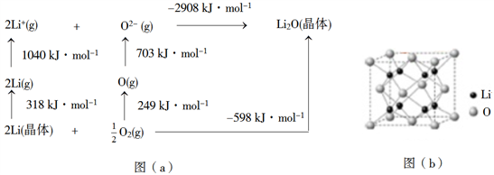
可知，Li原子的第一电离能为________kJ·mol−1，O=O键键能为______kJ·mol−1，Li2O晶格能为______kJ·mol−1。
（5）Li2O具有反萤石结构，晶胞如图(b)所示。已知晶胞参数为0.4665
nm，阿伏加德罗常数的值为NA，则Li2O的密度为______g·cm−3（列出计算式）。
查看原题图／原始配图
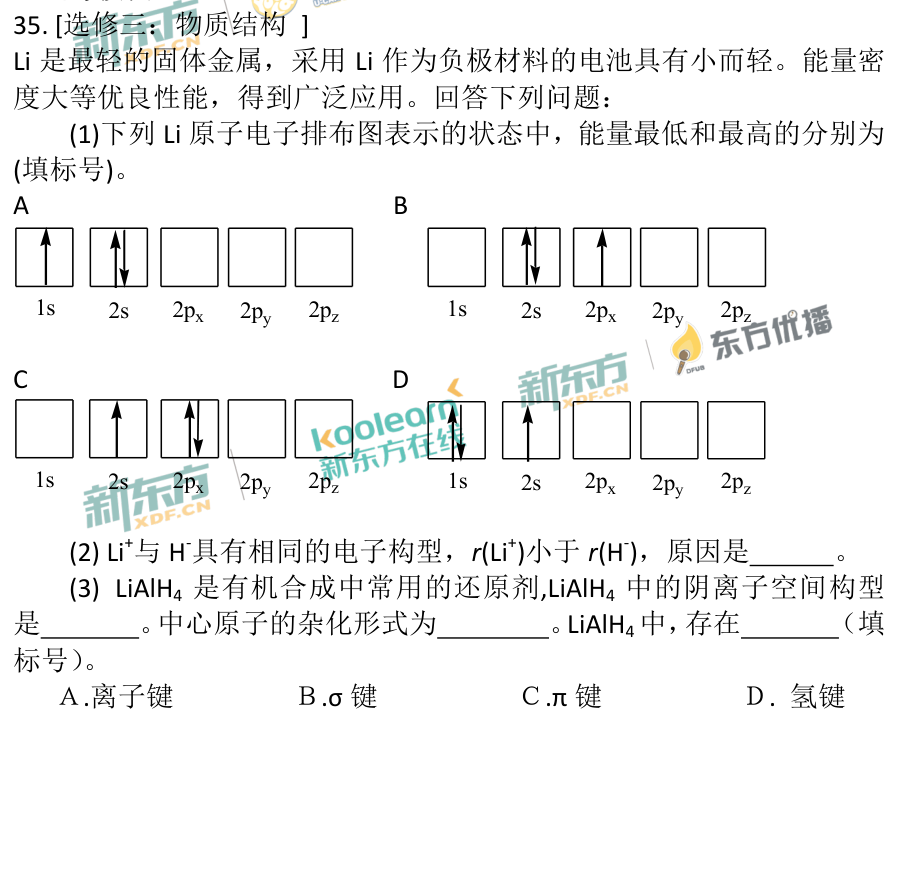
原始配图 1原始配图 2原始配图 3所用高中知识
基态电子排布、等电子体半径、价层电子对、盖斯循环、均摊法。
读题与思路
D为基态1s²2s¹；C把3电子都放到n=2且两个在2p，能量最高。等电子Li⁺核电荷更大所以更小。[AlH₄]⁻四键无孤对，正四面体sp³，化合物有离子键和σ键。循环给第一电离能1040/2=520、O=O键能249×2=498；晶格能318+1040+249+703+598=2908。反萤石每胞4O、8Li，ρ=120/[NA(0.4665×10⁻⁷)³]。
分步解析
- （1）Li基态为1s²2s¹，对应D，能量最低。图C把1s电子激发到较高能级，能量最高；比较时不能只看最外层单个电子。
- （2）Li+和H−均为1s²。Li核电荷数3大于H的1，相同电子层结构下核对电子吸引更强，所以r(Li+)更小。
- （3）[AlH4]−中心Al的价层电子对数为(3+4+1)/2=4，无孤电子对，构型为正四面体，sp³杂化。Li+与阴离子间有离子键，Al—H为σ键，选AB；没有π键，也没有符合高中氢键条件的H—N/O/F。
- （4）题图已标气态离子生成晶体的焓变为−2908 kJ·mol−1，可直接读出晶格能2908。以下用热循环再核验：图中1040 kJ对应2 mol Li(g)失去2 mol电子，第一电离能为520 kJ·mol−1。249 kJ仅断裂½ mol O2，O=O键能为498 kJ·mol−1。从元素到气态离子吸收318+249+1040+703=2310 kJ·mol−1；最后生成晶体放热U，故2310−U=−598，U=2908 kJ·mol−1。
- （5）O2−位于8个顶点及6个面心，每胞为8×⅛+6×½=4个；Li+位于内部共8个，组成Li8O4，即4个Li2O。晶胞质量为4×30/NA g，棱长为0.4665×10−7 cm；ρ=120/[NA(0.4665×10−7)³] g·cm−3。
答案
（1）D、C。（2）电子构型相同而Li⁺核电荷较大。（3）正四面体；sp³；AB。（4）520、498、2908 kJ·mol⁻¹。（5）120/[Nₐ(0.4665×10⁻⁷)³] g·cm⁻³。
检查与易错点
晶格能按将晶体拆成气态离子所需能量记正值；生成晶体的焓变为−U。密度中1 nm=10⁻⁷ cm，三次方不能漏。
晶胞参数为0.4665 nm，代入密度公式前先换算为cm。
本题来源：paper2018 · doc-paper
返回原卷说明与相对原子质量 返回非选择题说明 返回选考题说明
题目与已知条件
（15分）
[选修五：有机化学基础]
化合物W可用作高分子膨胀剂，一种合成路线如下：
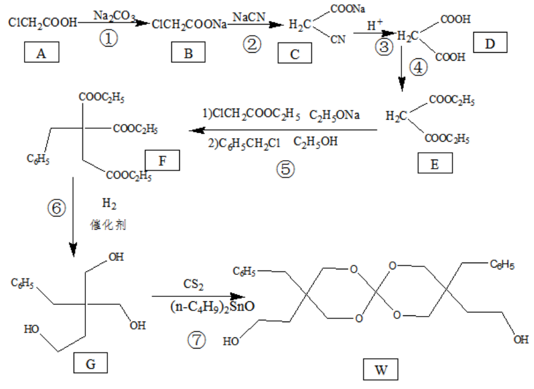
回答下列问题：
（1）A的化学名称为________。
（2）②的反应类型是__________。
（3）反应④所需试剂，条件分别为________。
（4）G的分子式为________。
（5）W中含氧官能团的名称是____________。
（6）写出与E互为同分异构体的酯类化合物的结构简式（核磁共振氢谱为两组峰，峰面积比为1∶1）______________。
（7）苯乙酸苄酯（）是花香型香料，设计由苯甲醇为起始原料制备苯乙酸苄酯的合成路线__________（无机试剂任选）。
查看原题图／原始配图
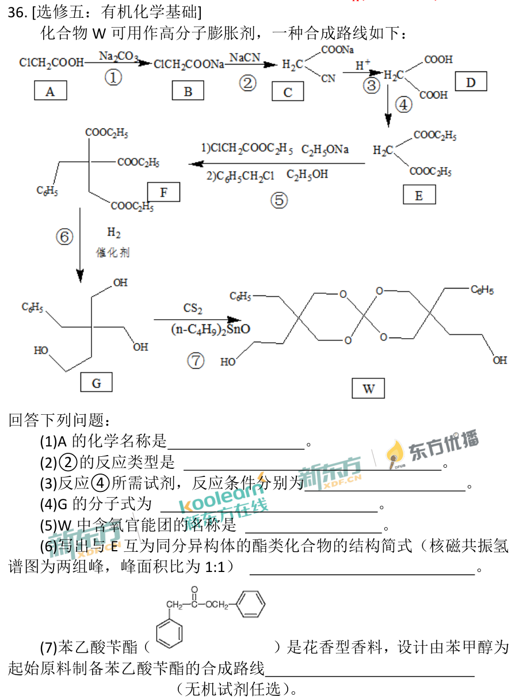
原始配图 1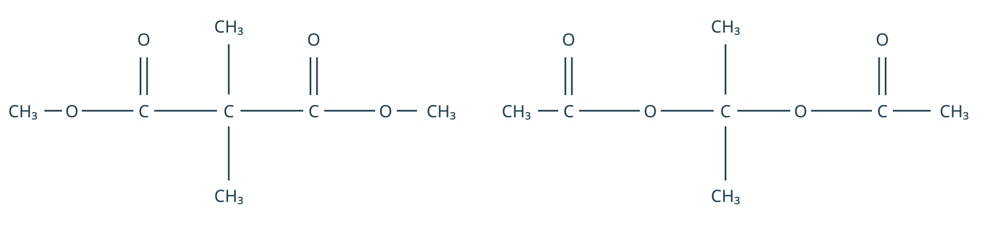
修订前解析配图 2 · 原创结构示意；左侧为二甲基丙二酸二甲酯，右侧为相应偕二乙酸酯。所用高中知识
卤代烃取代、腈水解增一碳、酯化、等效氢、逆合成分析。
读题与思路
A=氯乙酸；CN⁻替Cl是取代，腈水解增一个羧基，丙二酸与乙醇酯化成E。G按PhCH₂—C(CH₂OH)₂—CH₂CH₂OH计12C、18H、3O。W只有羟基/醚键，没有羰基。E同式C₇H₁₂O₄；(CH₃)₂C(COOCH₃)₂与(CH₃)₂C(OCOCH₃)₂均只有两组6H。苯甲醇一支氯代→氰代→水解增碳成苯乙酸，再与另支原料苯甲醇酯化。
分步解析
- （1）A为ClCH2COOH，以乙酸为母体，名称氯乙酸（2-氯乙酸）。
- （2）②中—Cl被—CN取代，属于取代反应。形成腈时，来自CN−的碳进入主链；酸性水解后转为羧基。
- （3）D为丙二酸HOOC—CH2—COOH，④与乙醇酯化得到丙二酸二乙酯E。所需乙醇、浓硫酸，加热；若试题仅问催化试剂和条件，则填浓硫酸、加热。
- （4）G可写为C6H5CH2—C(CH2OH)2—CH2CH2OH。计数：碳6+1+1+2+2=12；氢5+2+6+5=18；氧3，故分子式C12H18O3。
- （5）W中氧连接两个碳的部位为醚键，末端—OH为羟基；中心缩醛碳不等同酯羰基，不能填酯基。
- （6）E分子式C7H12O4。两种满足条件的对称结构为(CH3)2C(COOCH3)2和(CH3)2C(OCOCH3)2。前者两组氢分别来自两个C—CH₃和两个O—CH₃，后者来自两个C—CH₃和两个CO—CH₃，均为6H∶6H=1∶1。结构图见下。
- （7）一部分苯甲醇依次转化：C6H5CH2OH —HCl、加热→ C6H5CH2Cl —NaCN→ C6H5CH2CN —H+/H2O、加热→ C6H5CH2COOH；再与另一部分原料苯甲醇在浓硫酸、加热下酯化，得C6H5CH2COOCH2C6H5。最后一步另生成H2O。
原创结构示意；左侧为二甲基丙二酸二甲酯，右侧为相应偕二乙酸酯。答案
（1）氯乙酸。（2）取代反应。（3）乙醇、浓硫酸，加热。（4）C₁₂H₁₈O₃。（5）羟基、醚键。（6）H₃COOC—C(CH₃)₂—COOCH₃、CH₃COO—C(CH₃)₂—OOCCH₃。（7）苯甲醇→苄氯→苯乙腈→苯乙酸，与苯甲醇酯化。
检查与易错点
两异构体要核C₇H₁₂O₄且仅两类等效氢。NaCN有剧毒，本题仅作书面合成设计，不构成实验操作建议。苯乙酸比苯甲醇多1个碳，直接氧化苯甲醇只能得到苯甲酸，不能完成增碳。
本题来源：paper2018 · doc-paper
题源与核验说明
- 2018.html旧版解析文件；SHA-256：c8a734ea9175a72377fa7e1f2a0fd6cc017dd0af1352f8d3087c2e34e887f7a8
- 2018年高考真题——理科综合（全国卷Ⅰ） Word版含解析【KS5U 高考】.doc原卷文件；SHA-256：e6b187dad9347a5af105d61a2c97932bced2cb3677e27736bedfd54e58963157
- 北京新东方：2018全国Ⅰ卷化学逐题解析（用于核对原题与图）同卷题面或参考资料的公开来源；参考答案仅作对照，解析按题设给出推导。
- 中国教育在线：2018全国Ⅰ卷理综第8题单A或单B均给6分公告汇总汇录2018年各地考试部门关于第8题单选A或B均给分的公告。
- 中国教育在线：2018全国卷1理综原题及答案下载同卷题面或参考资料的公开来源；参考答案仅作对照，解析按题设给出推导。